Menu: fora do menu (a tela só abre digitando o endereço /controle-qualidade/amostragem/regra-amostragem-itens; não há item para ela no menu do Controle da Qualidade) · Situação do manual: Em ajuste · Fonte dos prints: versão nova.
Aviso sobre as fontes. Esta tela não tem manual do legado: ela vem do front novo e não tem equivalente com o mesmo nome no sistema entregue pelo fornecedor. Tudo abaixo vem da rodada 1 de testes da versão nova (11/11/2026) e da rodada do robô de 17/11/2026 (conta de administrador de teste, regra 6, unidade 3, verificação 3). O que é inferência está marcado como "(a confirmar com a área)" ou "Ponto para validar". A tela está parcial no manual: não foi possível testar perfil sem permissão nem o encadeamento com a Programação de Amostragem e a Amostragem.
Para que serve
Cadastra os itens de uma Regra de Amostragem: para cada regra (informada pelo número), define Nome, Descrição, Tipo de Cálculo, Quantidade de Cálculo, Unidade de Medida, Tolerância, Valor Inicial, Valor Final e a Verificação (checklist) ligada. O Tipo de Cálculo guarda PC (percentual) ou VA (valor absoluto): é o que a tela Regra Amostragem grava, e isso confirma o significado do campo. No legado, o item da regra tinha quantidade, unidade, tolerância e tipo de cálculo e, para produto e material, devia estar ligado a um checklist (RN-CQ-057 e RN-CQ-058; do legado; a confirmar na versão nova). O significado de Valor Inicial e Valor Final (a faixa a que o item se aplica) não aparece no legado como o conhecemos: Ponto para validar com a área.
A lista desta tela inclui também os itens que a tela Regra Amostragem cria sozinha (um item por regra, com o nome da regra, sem Valor Inicial e sem Valor Final). É por isso que aparecem linhas que você não incluiu aqui, e esses itens não podem ser editados por esta tela (ver "Cuidados e falhas conhecidas").
Antes de começar (o que precisa existir)
| O que precisa existir | Para quê | Onde se cadastra |
|---|---|---|
| Uma Regra de Amostragem | O campo "Regra de Amostragem" pede o número dela (no teste de 17/11, 6) | Amostragem > Regra Amostragem |
| Uma Unidade de Medida | O campo pede o número dela (no teste, 3) | Tabelas de apoio > Unidade de Medida |
| Uma Verificação (opcional) | Campo "Verificação": o número é o id interno do checklist, não o Código (o checklist de Código 5 aparece como 8) | Amostragem > Verificação de Amostragens |
| Acesso à tela | Não está no menu | Digitar o endereço |
Passo a passo
- Abrir a tela. Digite o endereço da tela (ela não está no menu). Abre com o título ITENS DA REGRA DE AMOSTRAGEM, o quadro Pesquisa (campo Pesquisa e lista Ativo com TODOS, SIM e NÃO), os botões PESQUISAR e LIMPAR e o link verde Incluir. A lista só aparece depois de PESQUISAR. Aberta pelo endereço, a tela mostra o cabeçalho "PRINCIPAL" e o menu Administração, Cadastros, Tabelas de apoio, não o do Controle da Qualidade (DV-CQ-N-007).

A imagem mostra o quadro Pesquisa, os botões PESQUISAR e LIMPAR e o link Incluir; a lista não aparece.
- Incluir. Clique em Incluir. Abre o quadro Dados com os campos abaixo e os botões SALVAR e VOLTAR. Regra de Amostragem* e Nome* têm asterisco; Unidade de Medida e Verificação são números digitados à mão; Tipo de Cálculo é um texto livre de 2 caracteres, sem lista.
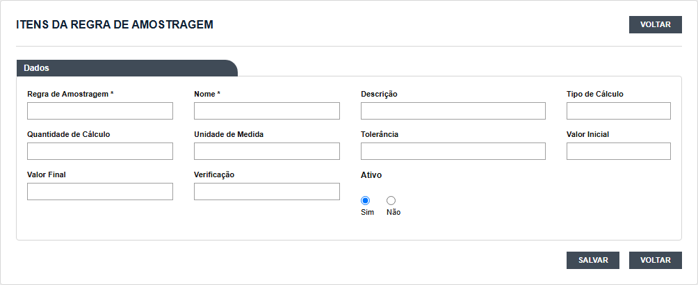
A imagem mostra o formulário em branco com os 11 campos (Regra de Amostragem*, Nome*, Descrição, Tipo de Cálculo, Quantidade de Cálculo, Unidade de Medida, Tolerância, Valor Inicial, Valor Final, Verificação e Ativo, com Sim marcado), SALVAR e VOLTAR. Tamanhos que a caixa aceita: Nome 100, Descrição 255 e Tipo de Cálculo 2 caracteres (a caixa para de aceitar; 100 e 255 gravam).
- Salvar vazio. Clique em SALVAR sem preencher, ou preenchendo só parte (sem Regra ou sem Nome). Nada acontece: a tela não mostra mensagem de campo obrigatório nem faixa de aviso e nem chama o servidor; os asteriscos são a única indicação de obrigatório (DV-CQ-N-003).

A imagem, tirada logo depois de clicar em SALVAR com tudo vazio, mostra o formulário sem nenhuma mensagem.
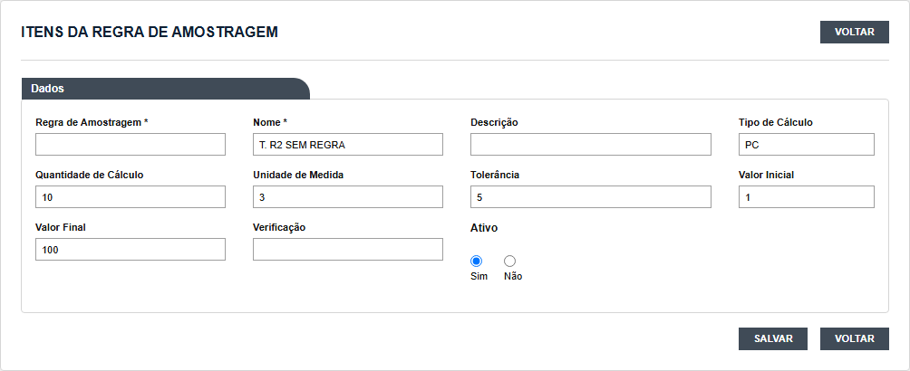
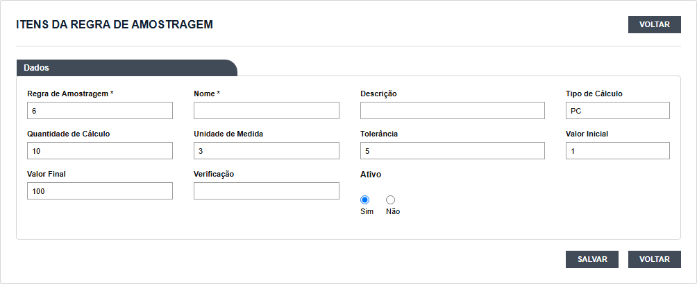
As duas imagens mostram o resultado de salvar com os demais campos preenchidos e a Regra (primeira) ou o Nome (segunda) em branco: o mesmo, sem mensagem.
- Preencher. Digite a Regra de Amostragem (6), o Nome, o Tipo de Cálculo ("PC"), a Quantidade de Cálculo (10), a Unidade de Medida (3), a Tolerância (5), o Valor Inicial (1), o Valor Final (100) e a Verificação (3). Valor Inicial (maior que zero) e Valor Final são exigidos pelo sistema, embora não tenham asterisco.
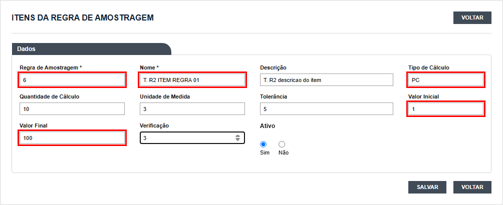
A imagem mostra o formulário preenchido com esses valores.
- Salvar. Clique em SALVAR. O item é gravado (no teste, resposta 201) e a tela volta aos filtros sem mensagem e sem confirmação (DV-CQ-N-002).
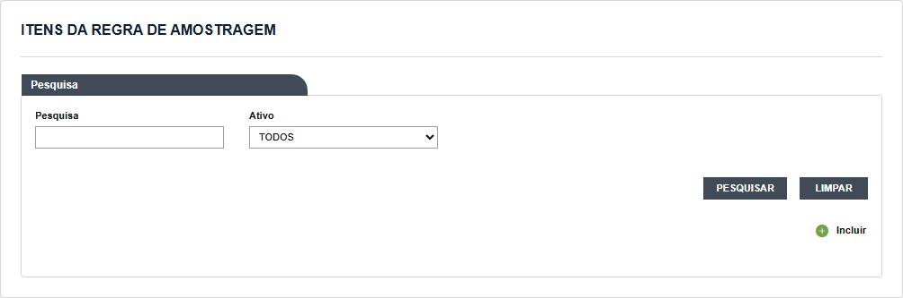
A imagem mostra só a tela de filtros, sem mensagem de sucesso.
- Ver o registro na lista. Clique em PESQUISAR. A lista mostra as colunas Nome, Descrição e Ativo e os ícones de Editar (lápis) e Excluir (lixeira), com paginação Anterior / Página 1 de 1 / Próxima. A lista não mostra a qual regra cada item pertence: itens de regras diferentes aparecem misturados (Ponto para validar).
A imagem mostra a lista com o item incluído, as colunas Nome, Descrição e Ativo, os ícones EDITAR e EXCLUIR e a paginação.
Pesquisar por nome. O campo Pesquisa procura só pelo Nome (parte do nome acha; Descrição, tipo e número da regra não acham).
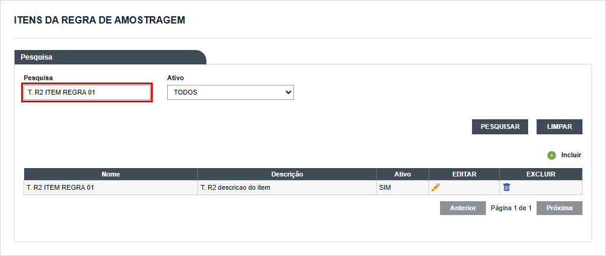
A imagem mostra o filtro Pesquisa com o nome do item e a lista só com ele.
Filtro Ativo e LIMPAR. Com Ativo = NÃO a lista mostra só os itens inativos. LIMPAR esvazia o campo, volta Ativo a TODOS e esvazia a lista.
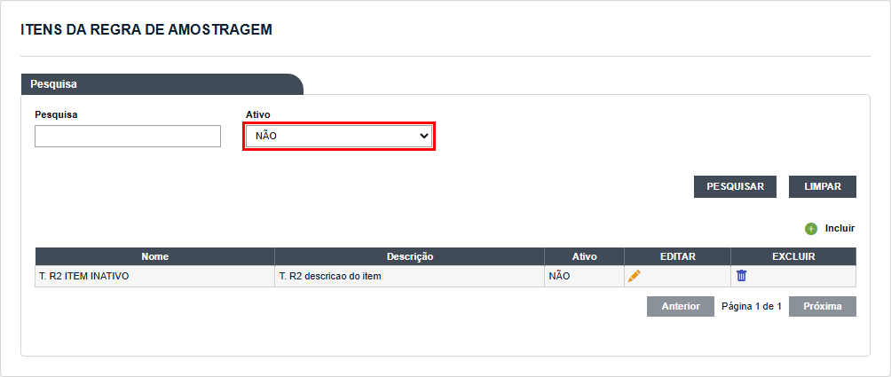
A imagem mostra a lista filtrada por Ativo = NÃO com o item inativo.
- Editar. Na lista, clique no lápis. O formulário abre com todos os valores do item; altere o que for preciso e clique em SALVAR (resposta 204). A tela volta aos filtros sem mensagem; depois de PESQUISAR, a lista mostra a alteração. Trocar a Regra de Amostragem do item na edição grava (o item passa para outra regra, sem mensagem); regra inexistente é recusada.
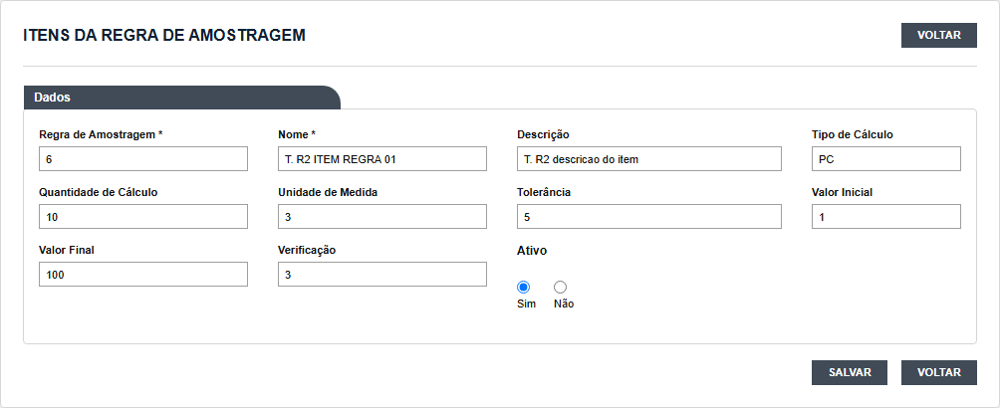
A imagem mostra o formulário aberto com o item incluído e seus valores.
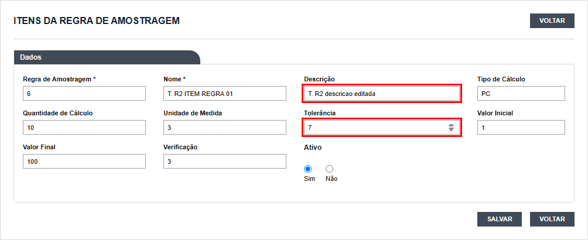
A imagem mostra a Descrição alterada e a Tolerância 7 antes de salvar.

A imagem mostra a tela depois de salvar a edição, sem mensagem.
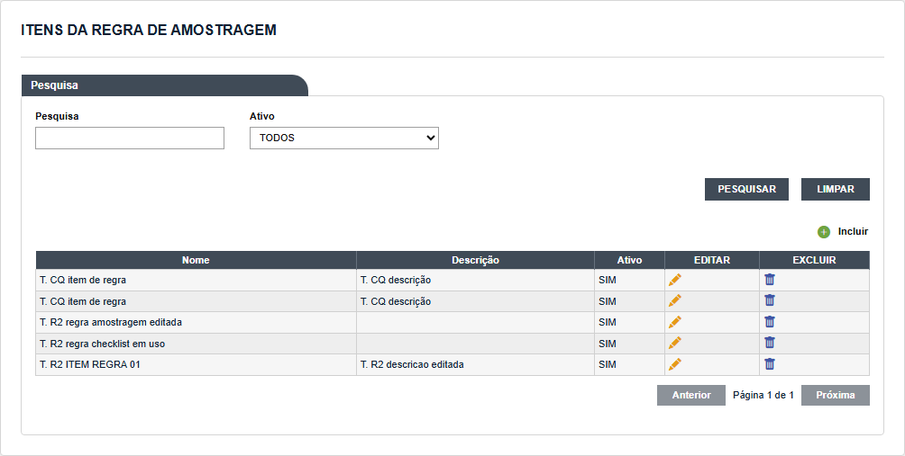
A imagem mostra a lista com a descrição alterada do item.
Inativar. Marque Ativo = Não na edição e salve: grava.
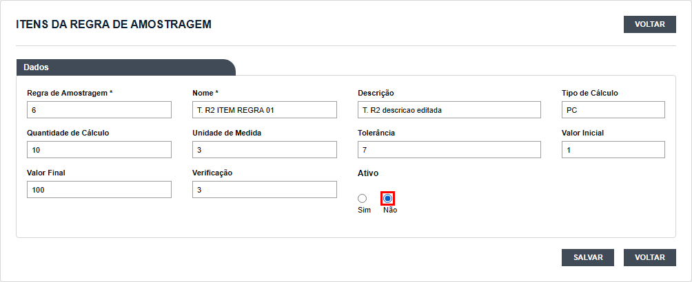
A imagem mostra o formulário de edição com Ativo = Não marcado.
Itens criados pela tela Regra Amostragem. Ao abrir um desses itens, Valor Inicial e Valor Final vêm em branco. Ao salvar, mesmo só com a Descrição alterada, a tela mostra a faixa rosa "Valor inicial informado inválido!" e não grava: esse item não pode ser editado por esta tela sem digitar Valor Inicial e Valor Final (DV-CQ-N-024).
A imagem mostra o formulário do item criado pela tela Regra Amostragem, com Valor Inicial e Valor Final em branco.
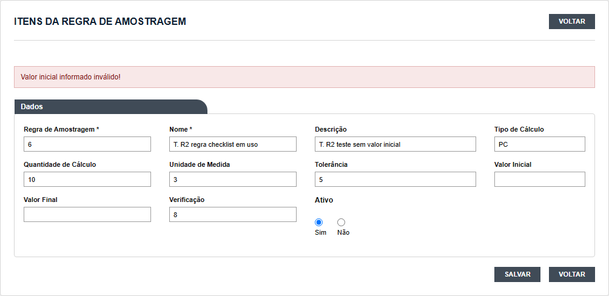
A imagem mostra a faixa de erro ao salvar o item sem Valor Inicial.
- Incluir o mesmo item duas vezes. O sistema aceita: nada impede o repetido (DV-CQ-N-003). Mesmo nome e mesmos dados gravam outro número interno e a tela volta aos filtros sem aviso.

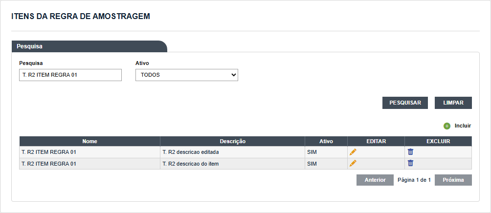
A primeira imagem mostra a tela de filtros depois da segunda inclusão igual, sem recusa nem aviso; a segunda mostra a lista filtrada com as duas linhas iguais.
- Excluir. Na lista, clique na lixeira. Aparece a caixa Confirmar exclusão com a pergunta "Deseja excluir este registro?" e os botões CANCELAR e CONFIRMAR. Não pede justificativa. CANCELAR não exclui; CONFIRMAR exclui o item certo (resposta 204) e não aparece mensagem de sucesso.
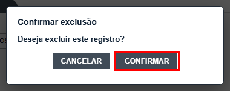
A imagem mostra a caixa "Confirmar exclusão: Deseja excluir este registro?" com CANCELAR e CONFIRMAR (CONFIRMAR marcado).

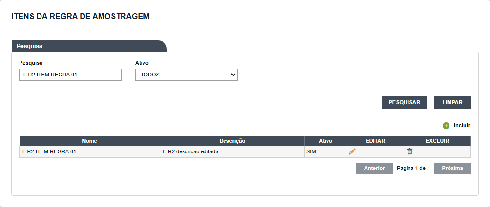

As três imagens mostram, em ordem: a lista inalterada depois de CANCELAR; a tela depois de confirmar a exclusão, sem mensagem; e a lista com uma só linha, depois da exclusão do repetido.
- Histórico. Não existe. A linha da lista só tem Editar e Excluir; não há botão de histórico (log) nesta tela (DV-CQ-N-003).
Ícones e botões da lista
| Ícone ou botão | O que faz |
|---|---|
| Lápis (EDITAR) | Abre o registro no formulário |
| Lixeira (EXCLUIR) | Pede "Deseja excluir este registro?" e exclui; sem justificativa |
| Histórico (log) | Não existe |
| Anterior / Próxima | Troca de página ("Página 1 de 1" no teste; a paginação com mais de uma página não foi testada) |
Botões e ações
| Botão | Onde | O que faz |
|---|---|---|
| PESQUISAR | Filtro | Mostra a lista conforme o filtro |
| LIMPAR | Filtro | Esvazia o campo, volta Ativo a TODOS e esvazia a lista |
| Incluir | Filtro | Abre o formulário em branco |
| SALVAR | Formulário | Grava (inclusão ou edição) e volta aos filtros, sem mensagem |
| VOLTAR | Formulário (no alto e no pé) | Volta à tela de filtros sem gravar (não testado isoladamente) |
| Lápis / Lixeira | Linha da lista | Editar / Excluir |
Mensagens do sistema
| Mensagem | Quando aparece |
|---|---|
| Confirmar exclusão: "Deseja excluir este registro?" (CANCELAR, CONFIRMAR) | Ao clicar na lixeira |
| "Valor inicial informado inválido!" | Valor Inicial vazio, zero ou negativo |
| "Valor final informado inválido!" | Valor Final vazio |
| "Valor inicial deve ser menor que valor final!" | Inicial maior que o Final |
| "QtdCalculo não pode ser negativo." / "Tolerancia não pode ser negativo." | Quantidade ou Tolerância negativa |
| "IdRegraAmostragem não encontrado." / "IdRegraAmostragem obrigatório." | Regra inexistente / regra 0 |
| "Unidade de medida não encontrada ou excluída." | Unidade inexistente |
| "Verificação não encontrada ou excluída." | Verificação inexistente |
| "Não foi possível concluir a operação devido a uma falha no servidor. Tente novamente mais tarde." | Tipo de Cálculo vazio |
| (nenhuma) | Ao salvar vazio, incluir, editar, excluir ou incluir repetido: o sistema não mostra mensagem (DV-CQ-N-002 e N-003) |